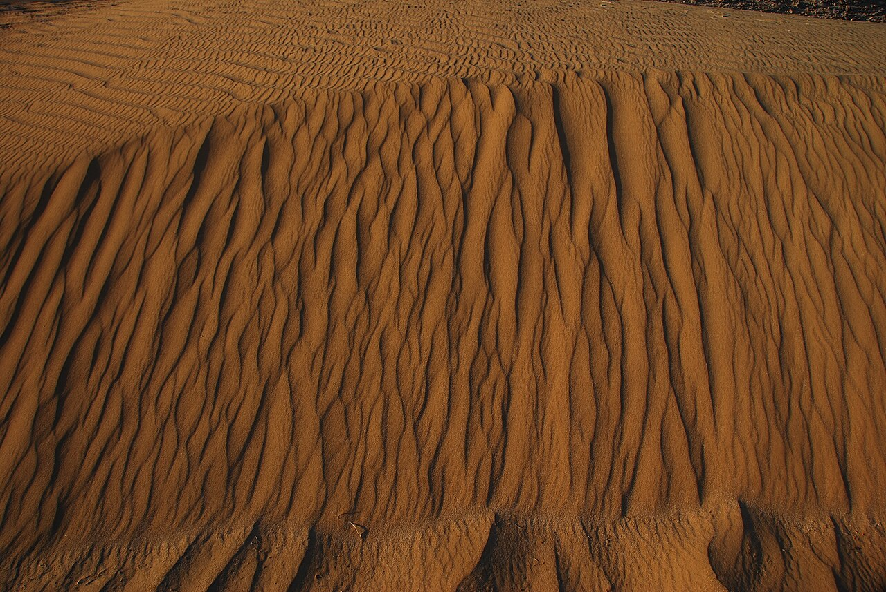

群落的主要类型
本期导读
荒漠 · 草原 · 森林 · 湿地

视频原话 · 导读3 句
- 同学们好！这节课梳理人教版选择性必修二第二章第二节——群落的主要类型。7.8s
- 高考常考不同群落的分布特点，以及生物适应环境的形态结构特征，常常结合图片或情境来考。9.1s
- 我们按六个考点梳理，每个考点都讲清楚怎么考、怎么做。5.5s
群落类型的划分01#
划分依据：群落的外貌和物种组成等方面的差异 → 陆地群落：荒漠、草原、森林等
干旱水分（降水量）、温度湿润
荒漠
物种少、结构非常简单
草原
种类较少、结构相对简单
森林
结构非常复杂且相对稳定
解题方法
判断群落类型：先看水分，再看物种多少、结构是否复杂
视频原话4 句
- 考点一，群落类型的划分。根据群落的外貌和物种组成等方面的差异，可以将陆地的群落大致分为荒漠、草原、森林等类型。12.4s
- 决定陆地群落类型的关键，是水分和温度等非生物因素。5.4s
- 一般来说，从干旱到湿润，依次出现荒漠、草原、森林，物种越来越多，结构越来越复杂。8.9s
- 考法：给出某地的降水量和群落特征，判断群落类型。解题方法：先看水分，再看物种多少和结构是否复杂。11.4s
荒漠生物群落02#
环境
极度干旱，降水稀少且不均匀
物种少，结构非常简单
物种少，结构非常简单
植物
仙人掌属：肉质茎，叶呈针状
骆驼刺：根系发达
骆驼刺：根系发达
动物
蜥蜴、蛇：表皮有角质鳞片，减少水分蒸发
排泄固态尿酸盐
排泄固态尿酸盐
易错
爬行动物以固态尿酸盐形式排泄含氮废物，不是尿素——减少水分散失
视频原话4 句
- 考点二，荒漠生物群落。分布在极度干旱区，年降水量稀少且分布不均匀，物种少，群落结构非常简单。10.8s
- 植物耐旱：仙人掌属植物有肉质茎，叶呈针状；骆驼刺根系非常发达。7.3s
- 动物也耐旱：蜥蜴和蛇的表皮外有角质鳞片，有助于减少水分蒸发。6.8s
- 易错：荒漠中的爬行动物以固态尿酸盐的形式排泄含氮废物，而不是尿素，这样可以减少水分散失。9.8s
草原生物群落03#
环境
半干旱，雨量不均匀
动植物种类较少，结构相对简单
动植物种类较少，结构相对简单
植物
耐寒旱生多年生草本占优势
叶片狭窄，有茸毛或蜡质层
乔木非常少见
叶片狭窄，有茸毛或蜡质层
乔木非常少见
动物
大都善于挖洞或快速奔跑
野兔、旱獭、黄羊
两栖类、水生动物少见
野兔、旱獭、黄羊
两栖类、水生动物少见
解题方法
草原开阔、缺少遮蔽：挖洞便于躲避敌害，奔跑便于逃避捕食、寻找食物
视频原话4 句
- 考点三，草原生物群落。主要分布在半干旱地区，不同年份或季节雨量不均匀，动植物种类较少，群落结构相对简单。11.9s
- 植物：耐寒的旱生多年生草本植物占优势，叶片狭窄，表面有茸毛或蜡质层，能抵抗干旱；乔木非常少见。10.8s
- 动物：大都具有挖洞或快速奔跑的特点，比如野兔、旱獭、黄羊；两栖类和水生动物非常少见。9.8s
- 考法：草原动物为什么善于挖洞或奔跑？解题方法：草原开阔、缺少树木遮蔽，挖洞便于躲避敌害，奔跑便于逃避捕食和寻找食物。13.4s
森林生物群落04#
环境
湿润或较湿润
结构非常复杂且相对稳定
结构非常复杂且相对稳定
动物
树栖和攀缘生活的种类特别多
松鼠、猿猴、多种鸟类
松鼠、猿猴、多种鸟类
阴生植物
茎细长、叶薄
细胞壁薄、机械组织不发达
叶绿体颗粒大、深绿色
细胞壁薄、机械组织不发达
叶绿体颗粒大、深绿色
易错
阴生植物叶绿体颗粒大、呈深绿色，是适应弱光的特征
视频原话4 句
- 考点四，森林生物群落。分布在湿润或较湿润的地区，群落结构非常复杂且相对稳定。9.0s
- 动物：树栖和攀缘生活的动物种类特别多，比如松鼠、猿猴和多种鸟类。7.7s
- 林下光照较弱，生活着阴生植物：茎细长，叶薄，细胞壁薄，机械组织不发达。8.1s
- 易错：阴生植物的叶绿体颗粒大、呈深绿色，这是适应弱光环境的特征，不是颗粒小、颜色浅。9.4s
湿地与海洋群落05#
湿地生物群落
既有水生生物，也有陆生生物
常见生物
芦苇、香蒲等挺水植物
鱼类、两栖类
栖息、觅食的鸟类
鱼类、两栖类
栖息、觅食的鸟类
海洋生物群落
分布受光照、温度、盐度影响
藻类主要在有光的浅水层
藻类主要在有光的浅水层
考法
湿地常与间接价值一起考：蓄洪防旱、净化水质、调节气候
视频原话4 句
- 考点五，湿地和海洋中的群落。湿地生物群落中，既有水生生物，也有陆生生物。8.0s
- 比如芦苇、香蒲等挺水植物，鱼类、两栖类，以及大量在这里栖息、觅食的鸟类。8.0s
- 海洋生物群落中，生物的分布受光照、温度、盐度等因素的影响，藻类主要分布在有光的浅水层。9.0s
- 考法：湿地常和生物多样性的间接价值一起考，比如蓄洪防旱、净化水质、调节气候。8.6s
生物适应环境06#
| 群落 | 环境 | 结构 | 生物的适应特点 |
|---|---|---|---|
| 荒漠 | 极度干旱 | 非常简单 | 肉质茎、针状叶、根系发达；角质鳞片、排尿酸盐 |
| 草原 | 半干旱 | 相对简单 | 旱生草本，叶窄有茸毛或蜡质层；动物挖洞、奔跑 |
| 森林 | 湿润 | 复杂、相对稳定 | 分层明显；树栖攀缘动物多；林下阴生植物 |
生物都适应所处的非生物环境，但不同群落中生物适应环境的方式不尽相同
解题方法
答题三步：环境特点 → 对应的结构特征 → 它的作用（结构与功能相适应、生物与环境相适应）
视频原话4 句
- 考点六，群落中的生物适应所处的环境。把三种陆地群落放在一起比较。7.3s
- 荒漠干旱：生物耐旱；草原半干旱：草本为主，动物挖洞或奔跑；森林湿润：分层明显，树栖攀缘动物多。11.0s
- 群落中的生物都是适应所处的非生物环境的，不同群落中生物适应环境的方式不尽相同。8.6s
- 解题方法：答适应性题目，用“结构与功能相适应、生物与环境相适应”的思路：先说环境特点，再说对应的结构特征，最后说它的作用。12.6s
易错速查✓
先自己判断，再点按钮查看对错与解析。
- 1荒漠爬行动物以尿素排出含氮废物说法错误：以固态尿酸盐的形式排泄
- 2草原动物大都善于挖洞或快速奔跑说法正确。
- 3阴生植物叶绿体颗粒小、呈浅绿色说法错误：颗粒大、呈深绿色
- 4草原上乔木非常少见说法正确。
- 5群落类型主要依据外貌和物种组成划分说法正确。
- 6荒漠群落物种少，结构非常复杂说法错误：结构非常简单
看水分定类型，看结构找适应！
视频原话 · 易错速查5 句
- 最后，用六道判断题检验一下。3.6s
- 判断一：荒漠爬行动物以尿素排出含氮废物？错，以固态尿酸盐排泄。判断二：草原动物大都善于挖洞或快速奔跑？对。13.5s
- 判断三：阴生植物叶绿体颗粒小、呈浅绿色？错，颗粒大、呈深绿色。判断四：草原上乔木非常少见？对。12.3s
- 判断五：群落类型主要依据外貌和物种组成划分？对。判断六：荒漠群落结构非常复杂？错，非常简单。11.7s
- 六个考点串成一条线：看水分定类型，看结构找适应。我们下期再见！7.3s
图片来源
图片来源：Wikimedia Commons —— Hezi Yizhaq《Complex Ripples in Sand Dune in Negev Desert》CC BY 3.0
Photo: Hezi Yizhaq, CC BY 3.0